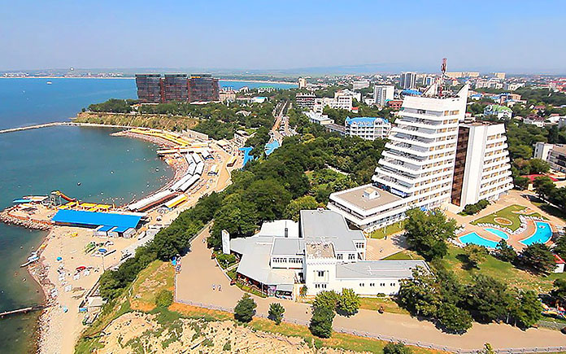

Анапа — небольшой курортный городок, куда летом приезжают миллионы человек. Это место часто называют «детским курортом», так как на песчаных пляжах Черного моря можно отлично отдохнуть с детьми. В окрестностях города насчитывается несколько сотен детских санаториев и лагерей для отдыха. Но уютно в Анапе может быть и взрослым, в городе все создано для туристов.
В Анапе регулярно проживают 75 тысяч человек, но летом количество увеличивается до нескольких миллионов. Ежегодно это место посещают от 2-х до 5 миллионов человек. Большинство приезжает просто провести время, но в городе есть множество лечебниц, где можно существенно улучшить здоровье. Лечебные грязи, минеральные источники, можжевеловые заросли и морской воздух делают место идеальным для людей с заболеваниями дыхательной системы, опорно-двигательного аппарата и при проблемах с сердечно-сосудистой системой.
Анапу считают самым солнечным городом Краснодарского края, так как за год здесь выпадает очень мало осадков по сравнению с другими городами этого региона. Летом тут жарко, вода прогревается до комфортной температуры, а мягкий песок делает вход в воду очень приятным.
